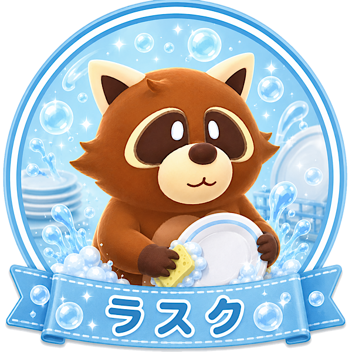

「クリアを支える皿洗い職人」タイプ
あなたは、派手な活躍だけでなく「今、本当に必要な作業」をきっちり片付けられるタイプ。
目立つ仕事にこだわらず、チームが詰まらないように裏側から支えられます。
特に、皿不足やホールの混乱など、放置すると一気に崩れるポイントに気づきやすい人です。
安定してクリアを目指す時に頼られる、堅実なプレイヤーです。
ラスクは皿やコップを高速で洗える、実用性の高いスキルを持っています。
汚れた食器が溜まると提供が止まるため、皿洗いの速さはそのままチームの安定感につながります。
初心者帯でも上級者帯でも、食器管理はとても大事な仕事。
「地味だけど勝ちに直結する作業」を大切にできるあなたと相性の良いキャラです。